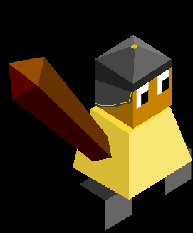

Saywaden
The Saywaden simply love their home soil. But they soon realise that if they want to stay on their home sand ground, they will use their earth abilities crush anyone who would dare to set foot on their rocks.
The Saywaden have a modified tech tree and begin with a Granusander.
Units
| replaces | name | cost | health | attack | defence | range | movement | skills |
|---|---|---|---|---|---|---|---|---|
| Defender | Granusander | 6 | 20 | 1 | 3 | 1 | 1 | Granulate, Fortify |
| None (unlocked with meditation/terraism) | Psammoterra | 5 | 10 | 2 | 3 | 1 | 1 | Fortify, Wall Creation |
| Giant | Gerrapsater | N/A | 40 | 3 | 5 | 1 | 1 | Granulate, Wall Creation |
Skills
Granulate - if an opponent unit is next to the granusander for more than 2 turns, the unit is turned to sand - there is a sand residue on the tile and no other tribes unit can go onto that tile - the sand disappears after a turn - a frozen unit cannot be turned to sand - if the ganusander is frozen, it will not turn units to sand - the granusander can turn multiple units to sand at once - if either is frozen, if they are still next(for more than 2 turns) to each other after they are unfrozen, then the unit(s) around the Granusander will be immediately turned to sand
Wall Creation - creates a rock wall on the tile(s) next to him for 2 stars per tile - you choose which tiles you want the walls on - the walls have a health of 30 and defense of 4 - walls will not retaliate damage and will disappear after 3 turns - the maximum number of walls that can be made at one time is twice the number of total Psammoterras around
Abilities
Land Slide - costs 5 stars and can be used 5 times per turn - when used, all oponent units in one direction of a mountain will take damage of calculation 3 attack and 20 health - if any unit is on the mountain, it will go into one of the three spaces where the landslide hits if at least one is free - anyone on the landslide takes damage of 1 attack for 10 health - only your own units will not get hurt or moved by the landslide
Buildings
Sand temple - has to be built on sand before it disappears and is worth 2 population - any Saywaden unit on it get +1 health and +1 defense - usual temple score - costs 20 stars to build
Mountain temple - a Saywaden unit on a mountain temple will get a x2 defense bonus
Techs
Terrasism (r. meditation) - unlocks Mountain temple, sand temple, defense bonus, peace task, psammoterra
Granuding (r. shield) - unlocks Granusander(r. defender)
Other
Spawn rates
Field, nothing: 20%
Field, furit: 10%
Field, crop: 15%
Forest, nothing: 5%
Forest, game: 5%
Moutain, nothing: 20%
Moutain, ore: 25%
City name parts
Pan Ja Min Ti En Keb Cru Ser Ez Dil Ar We Sho Nup Hra Bes
Images

Saywaden warrior